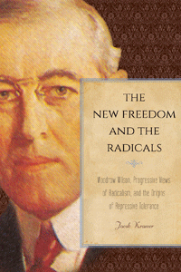

<HTML>
<head><script> (function(i,s,o,g,r,a,m){i['GoogleAnalyticsObject']=r;i[r]=i[r]||function(){  (i[r].q=i[r].q||[]).push(arguments)},i[r].l=1*new Date();a=s.createElement(o),  m=s.getElementsByTagName(o)[0];a.async=1;a.src=g;m.parentNode.insertBefore(a,m)   })(window,document,'script','//www.google-analytics.com/analytics.js','ga');   ga('create', 'UA-43183130-1', 'temple.edu');   ga('send', 'pageview'); </script>
<title>Jacob Kramer: The New Freedom and the Radicals - Print</TITLE>
<link rel="stylesheet" href="general.css" type="text/css"><SCRIPT LANGUAGE = JAVASCRIPT></SCRIPT></HEAD>
<BODY LINK="#3152A5" VLINK="#3152A5" ALINK=Gray BGCOLOR=White>
<CENTER><P CLASS=intro><br>How progressives thought about radical politics at the beginning of the twentieth century<br><br></P></CENTER><br>&nbsp;
<!--none//--><Table width="100%" border=0 cellspacing=5><tr><td width="175" align="center"></td><td>

<h1 class="booktitle">The New Freedom and the Radicals</h1>
<h1 CLASS=subtitle>Woodrow Wilson, Progressive Views of Radicalism, and the Origins of Repressive Tolerance</h1>
<h3 class="author">Jacob Kramer</h3>
<P class="info">paper EAN: 978-1-4399-0839-6<br>$29.95, Jan 17,<FONT COLOR=#990033> Available</FONT><br>


<br>cloth EAN: 978-1-43990-838-9<br>$79.50, May 15, <FONT COLOR=#990033>Available</FONT>

<br><br>Electronic Book EAN: 978-1-43990-840-2<br>$79.50

<br> 236 pp, 

 6x9

</P></td></tr></table><BR><BLOCKQUOTE><P><I>"</I>The New Freedom and the Radicals<I> is the first attempt to broadly understand the relationship between progressives and radicals. Kramer offers an answer to the question of the origins of ‘repressive tolerance’ in the early 20th century. Well written and featuring a good analysis and integration of both primary and secondary materials, Kramer maintains a dispassionate approach to sensitive and timely issues, such as the limits on democracy and the challenges faced by dissenters during times of national stress. He has chosen a group of important and influential progressive figures and shown how their views or positions on violence and radicalism changed or were modified over time. As a work of intellectual history </I>The New Freedom and the Radicals<I> succeeds admirably."</i> <br>&#151<b>Philip Yale Nicholson</b>, Professor Emeritus of History, Nassau Community College, and author of <i>Labor’s Story in the United States</i></I></P></BLOCKQUOTE>
<P><P>Radicals such as socialists, syndicalists, and anarchists are often thought of as marginal in American history. However, in the early decades of the twentieth century, progressives—those who sought to regulate big business, reduce class conflict, and ameliorate urban poverty—took the radicals’ ideas very seriously. 

<P>In <I>The New Freedom and the Radicals</I>, Jacob Kramer deftly examines how progressivism emerged at a time of critical transformation in American life. Using original archival sources, Kramer presents a study of Wilsonian-era politics to convey an understanding of the progressives’ views on radical America. 

<P><I>The New Freedom and the Radicals</I> shows how the reactions of progressives to radicals accelerated the pace of reform in the United States, but how the movement was at times predisposed to repressing the radical elements to its left. In addition, Kramer asks to what extent progressives were responding to and influenced by those who opposed the state, capitalism, and the class structure altogether, as well as how progressives’ views of them changed in relation to events.</p>
<BR><H2 class="inpageheading">Excerpt</h2><P>Excerpt available at <a href="http://www.temple.edu/tempress">www.temple.edu/tempress</a></p>

<BR><H2 class="inpageheading">Reviews</h2><p>
<p><i>"</i>The New Freedom and the Radicals<i> is a unique book that looks at radicalism through the lens of liberalism. Kramer asks how the two parts of progressivism became two distinct movements. His argument about the relationship between radicalism and liberalism within the larger progressive movement is shrewd, and he deftly synthesizes the vast literature on progressivism."</i><br>&#151<b>Richard A. Greenwald</b>, Professor of History and Dean of the School of Humanities and Social Sciences, Brooklyn College, The City University of New York, and author of <i>The Triangle Fire, the Protocols of Peace, and Industrial Democracy in Progressive Era New York</i>

<p><i>"In this significant contribution to understanding the relationship between Progressive Era reformers and radicalism, Kramer follows the changing views on radicalism and state repression among a number of different Progressives...over a period spanning the first 25 years of the last century. This ambitious and complex intellectual history is realized through analysis of the writings of these reformers and engagement with extensive scholarly work on the period. Kramer’s central argument-that Progressivism cannot be understood without addressing its relationship to political and labor radicalism, and that this relationship was subject to change under the pressure of international and domestic developments—is welcome.... Kramer is the first to chart over an extended period the impact of radicalism on the development of political thought among leading Progressives. Summing Up: Highly recommended."</i><br>&#151<b><i>CHOICE</i></b>

<p><i>"This is an insightful book...[Kramer] provides a brisk intellectual narrative of the relationship between such influential progressives as Walter Lippmann, Jane Addams, Herbert Croly, W. E. B. Du Bois, and Frank Walsh, and what were the leading groups on the American Left—the Socialist party and the Industrial Workers of the World.... Kramer gives a particularly nuanced account of the progressives' response to labor unrest."</i><br>&#151<b><i>Journal of American History</i></b>

<p><i>"Kramer is impressive in laying out the four strands of radicalism and documenting their development chronologically…. [He] does a commendable job of assembling and organizing the material for his argument. He demonstrates sophistication in presenting and assessing competing sources of ideas among leading progressive thinkers and contributes to our understanding of the coagulating forces in this era and their dynamics"</i> <br>&#151<b><i>Perspectives on Politics</i></b>

<p><i>"[A] worthy project that attempts to map the shifting boundaries between progressive reform and radicalism. And nowhere is this achievement more fruitful than in Kramer’s rich description of the silencing and backtracking of progressives during wartime. What emerged from the war, as Kramer does an excellent job of showing, is a pragmatic distinction that progressives made between the defense of radicals’ individual rights, including freedom of expression, and a more cautious and ambiguous response to the radicals’ programs for socializing property and attacking the foundations of capitalism."</i> <br>&#151<b><i>American Historical Review</i></b>
</p>


<p><i>"(A) thought-provoking and well-researched book.... Kramer's arguments, built on a solid foundation of archival and secondary sources, are insightful and mostly persuasive. Most importantly, he is likely to influence future debates and discussions about this critical period.... He approaches these topics as an intellectual historian, offering perceptive readings of his subjects' speeches and writings.... Kramer offers an especially nuanced and well-reasoned analysis of Brandeis's relationship with labor... (T)his remarkable book...deserves to be read and discussed widely.... Kramer deserves our sincere thanks for producing an original and analytically sophisticated study.</i>"<br/> <i>&#8212;</i><b><i>Labor: Studies in Working-Class History</i></b><br>
     
      <p><em>"Kramer's work looks...at the eight years of the Wilson presidency, and places it in the context of the pre-Wilson progressive era and the post Wilson Red Scare and return to 'normalcy.' He notes that there was no single thread of progressivism, but rather streams including liberalism, radicalism, and anarchy. He does this by quoting extensively from many of the intellectual giants of the first quarter century of the United States....(Kramer) makes a number of excellent points.</em>"<br>
		  &#8212;<strong><em>Labor Studies Journal</em></strong><br>
     
     

	<p><em>"In </em>The New Freedom<em>, Kramer argues that progressives admired and even mimicked the elan of radicals, seeing in proposals for an expanded state the capacity for adaptive change.... [It] center[s] its arguments on the labor movement as a focus of radical politics."</em><br/>&#8212;<b><i>Reviews in American History</i></b><br>

<p><em>"[Kramer] seeks to explain the complex relationship between progressives and radicals during the first quarter of the twentieth century. In evaluating the vast primary sources and scholarly literature on reform in the Industrial Age, the author painstakingly traces the labyrinthine connections between progressives and radicals, be they socialists, anarchists, syndicalists, or foreign revolutionaries.... It is in his analysis of the relationship between progressives and radicals that Kramer's work is most convincing. He clearly shows a pattern of progressive support (however guarded) for radicals' ends when it served their mutual benefit."</em><br/>&#8212;<b><i>The Historian</i></b>
     
      </p>


<BR><H2 class="inpageheading">Contents</h2><p>
<p>Acknowledgments
<br>Introduction
<br>1. The Memory of Reconstruction and the Cauldron of Labor Militancy, 1900–1908
<br>2. Organizing the “Largely Unorganized Drift of Desire”: The Protocol of Peace and the Cautious Embrace of Radicalism, 1908–1914
<br>3. “Industrialism on Trial”: The Commission on Industrial Relations and the High Tide of Coalition Politics, 1914–1917
<br>4. “An Advancing if Uncheckable Avalanche”: World War I, 1917–1918
<br>5. A Rule of Reason Correctly Applied: The Red Scare and the Rights of Radicals, 1919–1920
<br>6. “A Welding Together of the Forward- Looking Voters”: The Farmer- Labor Party and the Renewal of Coalition Politics, 1920–1924
<br>Conclusion
<br>List of Abbreviations
<br>Notes
<br>Bibliography
<br>Index
</P><BR>&nbsp;<BR><H2 class="inpageheading">About the Author(s)</H2><p>
<P><b>Jacob Kramer</b> is an Associate Professor of History at Borough of Manhattan Community College. He is a former Associate Editor of <i>Foreign Affairs</i>.</P>
</p>
<BR><H2 class="inpageheading">Subject Categories</H2>
<p><A HREF="/tempress/history.html" TARGET="_top">History</a>
<BR><A HREF="/tempress/political.html" TARGET="_top">Political Science and Public Policy</a>
<BR><A HREF="/tempress/american.html" TARGET="_top">American Studies</a>
</p>
<P>&nbsp;</P><font face="Arial" size="1"><a href="copyright.html" OnMouseOver="window.status='Web Copyright Policy';return true;" OnMouseOut="window.status=''" TITLE="Web Copyright Policy">&copy;</a> 2016 <a href="http://www.temple.edu" target="new" OnMouseOver="window.status='Link to Temple University home page';return true;" OnMouseOut="window.status=''" TITLE="Link to Temple University home page">Temple University</a>. All Rights Reserved. This page: <a href="http://www.temple.edu/tempress/titles/2201_reg.html"OnMouseOver="window.status='Link to the book page';return true;" OnMouseOut="window.status=''" TITLE="Link to the book page">http://www.temple.edu/tempress/titles/2201_reg.html.</a></font></BODY></HTML>
                    